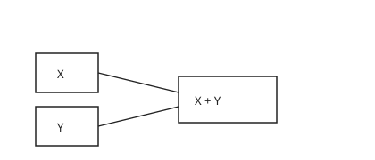

<script src="/assets/redirect.js"></script>
<section class="theory" data-section="S2-3.2">
<h2>3.2 Sum and difference of independent random variables</h2>
<p class="src">Based on Cambridge International AS &amp; A Level Mathematics: Probability &amp; Statistics 2 Coursebook, Chapter 3, printed pp.56-60. Printed pages were read from S2.pdf (printed 56-60 = PDF 68-72). Own wording and new numbers.</p>
<p class="key-words"><strong>Key words:</strong> <em>sum of independent random variables</em></p>
<p>For any random variables \(X\) and \(Y\) (independent or not),
\[\operatorname{E}(aX+bY)=a\operatorname{E}(X)+b\operatorname{E}(Y).\]
If \(X\) and \(Y\) are <strong>independent</strong>, the variance of a linear combination also splits:
\[\operatorname{Var}(aX+bY)=a^2\operatorname{Var}(X)+b^2\operatorname{Var}(Y).\]
The same idea applies to a sum of independent copies of a single random variable: if \(Y=X_1+X_2+X_3+X_4\) and the \(X_i\) are independent values of \(X\), then \(\operatorname{E}(Y)=4\operatorname{E}(X)\) and \(\operatorname{Var}(Y)=4\operatorname{Var}(X)\).</p>
<figure>

<figcaption>Independence is needed for the variance of a sum, but not for the mean of a sum.</figcaption>
</figure>
<div class="worked-example"><h4>Worked example 1</h4>
<p class="src">Book: printed pp.56-60. New integer numbers.</p>
<p>\(X\) has mean 5 and variance 4. \(Y\) is independent of \(X\) and has mean 3 and variance 2. Find \(\operatorname{E}(X+Y)\).</p>
<ol class="steps">
<li>\(\operatorname{E}(X+Y)=5+3=8\). <span class="mark">A1</span></li>
</ol></div>
<div class="worked-example"><h4>Worked example 2</h4>
<p class="src">Book: printed pp.56-60. New integer numbers.</p>
<p>With the same \(X\) and \(Y\) as in Worked example 1, find \(\operatorname{Var}(2X-Y)\).</p>
<ol class="steps">
<li>\(\operatorname{Var}(2X-Y)=4\times 4+1\times 2=18\). <span class="mark">A1</span></li>
</ol></div>
<h3>Common mistakes</h3><ul>
<li>Writing \(\operatorname{Var}(X-Y)=\operatorname{Var}(X)-\operatorname{Var}(Y)\). The coefficient of \(\operatorname{Var}(Y)\) is still squared, so it is added.</li>
<li>Using \(\operatorname{Var}(4X)=4\operatorname{Var}(X)\) instead of \(16\operatorname{Var}(X)\), or treating a sum of four independent copies as if it were \(4X\).</li>
</ul>
<div class="quick-check" data-q="QC1">
<h4>Quick check 1</h4>
<p>\(X\) has mean 5 and variance 4. \(Y\) is independent of \(X\) and has mean 3 and variance 2. Find \(\operatorname{E}(X+Y)\).</p>
<details><summary>Show answer</summary>
<ol class="steps">
<li>\(5+3=8\). <span class="mark">A1</span></li>
</ol>
<p class="final">\(8\)</p>
</details>
</div>
<div class="quick-check" data-q="QC2">
<h4>Quick check 2</h4>
<p>\(X\) has variance 4 and \(Y\) is independent of \(X\) with variance 2. Find \(\operatorname{Var}(X+Y)\).</p>
<details><summary>Show answer</summary>
<ol class="steps">
<li>\(4+2=6\). <span class="mark">A1</span></li>
</ol>
<p class="final">\(6\)</p>
</details>
</div>
<div class="quick-check" data-q="QC3">
<h4>Quick check 3</h4>
<p>\(X\) has variance 4 and \(Y\) is independent of \(X\) with variance 2. Find \(\operatorname{Var}(2X-Y)\).</p>
<details><summary>Show answer</summary>
<ol class="steps">
<li>\(4\times 4+2=18\). <span class="mark">A1</span></li>
</ol>
<p class="final">\(18\)</p>
</details>
</div>
<h3>Past paper</h3>
<p class="src">9709/73/O/N/19 Question 1(i) only, 2 marks, together with the official opening sentence. Official QP and official MS. Part (ii) of this paper was already used in S2-3.1 and is omitted. The question number was checked against the official QP.</p>
<p>The random variable \(X\) has mean 2.4 and variance 3.1.</p>
<p>(i) The random variable \(Y\) is the sum of four independent values of \(X\). Find the mean and variance of \(Y\). [2]</p>
<details><summary>Show official scheme</summary>
<ol class="steps">
<li>Mean of \(Y\) is \(9.6\). Official MS: B1. <span class="mark">B1</span></li>
<li>Variance of \(Y\) is \(12.4\). Official MS: B1. <span class="mark">B1</span></li>
</ol></details>
</section>
